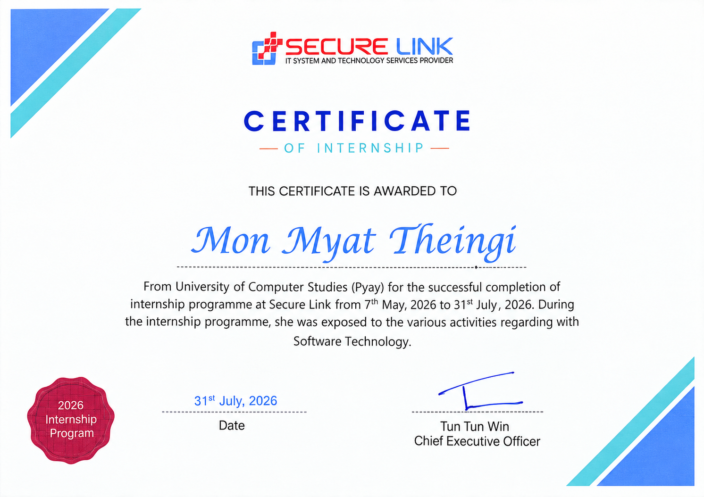

01
NLP · Healthcare
Clinical IE + Drug Interaction
Extracting clinical entities, connecting medication details, and surfacing potential drug interactions from unstructured notes.
Software engineer Yangon, Myanmar
Hi, I’m Mon. I like turning complicated ideas into software people can actually use.
Software · systems · cloud
01 / Evidence, not buzzwords
Two systems built around real, difficult information problems.
NLP · Healthcare
Extracting clinical entities, connecting medication details, and surfacing potential drug interactions from unstructured notes.
RAG · Legal technology
Making Myanmar legal information easier to search and understand through source-grounded retrieval and transparent citations.
Prepared business data, selected features, evaluated a predictive model, and visualized the results for clearer decisions.
A Java web application for customer records, electricity billing, payments, and structured database management.
02 / Experience
Java Developer Intern
Completed a three-month software technology internship, building practical familiarity with Java application development and modern team workflows.

View certificate PDF ↗03 / About
I’m a final-year Computer Science student who likes understanding the whole system—not just the screen people see.
My projects span web applications, NLP, machine learning, retrieval, and databases. I care about building software that is understandable, dependable, and useful to real people.
I’m looking for a junior role where I can contribute now, learn from a strong engineering team, and grow toward cloud engineering.
04 / My next chapter
I’m curious about what happens after software is built—how it gets deployed, stays reliable, and serves people at scale. Right now I’m strengthening my foundations in Linux, networking, deployment, automation, and cloud platforms.
05 / Toolkit
Python · Java · JavaScript · C++ · C# · PHP
HTML · CSS · Flask · J2EE · REST APIs
NLP · BERT · Machine Learning · SQL · MySQL · PostgreSQL · pgvector
Git · OOP · SDLC · System analysis · Database design
06 / Let’s connect
I’m open to junior software and cloud-focused opportunities where I can contribute, learn, and keep building.
Start a conversation ↗